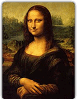
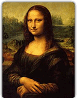
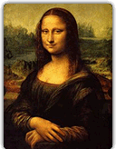

CloudCarousel 是能讓我們把圖片弄成 3D 立體的環狀瀏覽的套件。除了可以透過左右鈕來旋轉切換之外，若在引用 [link href="http://plugins.jquery.com/project/mousewheel" title="Mouse Wheel Extension" css="boldBlue"] 後則能支援滑鼠滾輪來控制呢。
套件名稱：ACloudCarousel
套件版本：1.0.3
作者網站：http://www.professorcloud.com/mainsite/carousel.htm
套件網址：N/A
發佈日期：2010-05-13
檔案大小：11.6 KB
檔案下載：cloud-carousel.1.0.3.js
引用檔案：jquery.mousewheel.js
